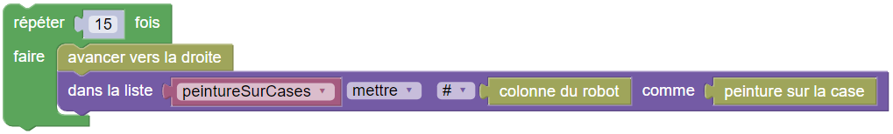
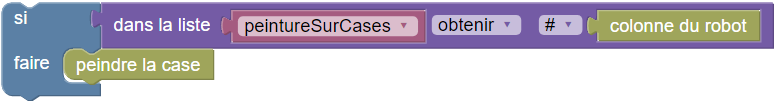

Dernière ligne


Programmez le robot pour qu'il peigne toutes les cases marquées. Il s'agit des cases qui sont juste en dessous d'une case peinte. La rangée du bas correspond à celle du haut, mais retournée : la case 2 contient un marqueur si la case 15 est peinte, la case 3 si la case 14 est peinte, etc. Une case de la rangée du bas est marquée s'il y a plus de cases peintes de cases blanches au dessus d'elle.
La difficulté est qu'une fois qu'il est passé sur la deuxième ligne, votre robot ne peut plus remonter !
Votre programme doit donc mémoriser quelles cases sont peintes sur la première ligne, puis utiliser cette mémoire pour déterminer quelle cases peindre sur la deuxième ligne.
Une possibilité serait de créer une variable par case pour stocker les valeurs du capteur :

droite() peintureSurCase2 = peintureSurCase() droite() peintureSurCase3 = peintureSurCase() droite() peintureSurCase4 = peintureSurCase() ...
Puis pour chaque case de la deuxième ligne, lire la variable correspondante pour déterminer s'il faut peindre :
droite() if (peintureSurCase2): peindre() droite() if (peintureSurCase3): peindre() ...

Plutôt que d'utiliser 15 variables différentes pour stocker pour chacune des 15 cases devant le robot, si elle est peinte ou non, vous allez utiliser une liste. Une liste est une variable qui peut contenir plusieurs cases. On commence par créer une liste videde 17 cases à 0, que l'on met dans une variable :
peintureSurCases=[0]*17

On peut ensuite stocker des valeurs dans des cases de la liste, en indiquant leur numéro et la valeur que l'on souhaite stocker dans la case qui porte ce numéro.
Ici, on veut stocker la valeur du capteur pour chacune des 15 cases devant le robot. On utilise donc un capteur qui indique le numéro de la colonne du robot, comme numéro de case où stocker la réponse du capteur quand on se trouve sur cette case :
for loop in range(15):
droite()
peintureSurCases[colonne()] = peintureSurCase()

Une fois sur la deuxième case, on pourra relire la valeur mémorisée comme ceci :
if (peintureSurCases[colonne()]):
peindre()

Votre programme devra donc faire des calculs et comparaisons simples sur les numéros de colonnes.
Dans cette version, il sera utile de pré-remplir une liste avec des zéros dès sa création :

Notez que votre programme doit fonctionner sur les deux tests.